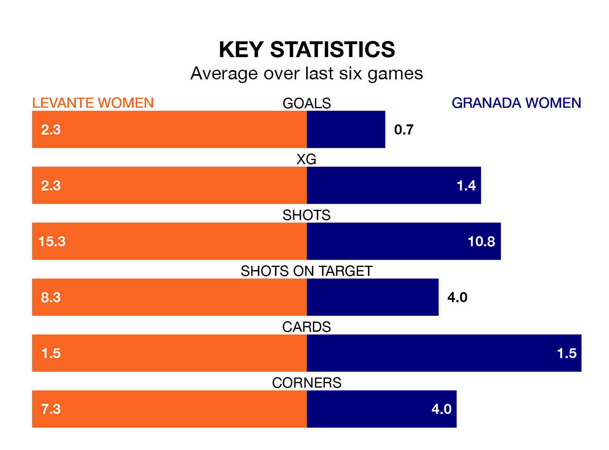

Mid-season relegation candidates Granada Women face a challenge away against high-flying Levante Women at Ciudad Deportiva de Buñol-Campo 1 on Sunday.
Granada Women are 15th in the Primera Division Women table, and have picked up two wins and no draws in their 14 games to date.
Levante, meanwhile, are second in the standings with 30 points, having won nine and drawn three of their first 13 matches, and are nine points behind table-toppers Barcelona W.
Levante are in fantastic form in Primera Division Women, with five wins and one loss from their last six games.
With a win and five losses over that period, Granada's form is much worse – they have taken three points from 18, compared to the home team's 15.
With 10 goals in 14 games so far this season, the visitors are the league's joint-third-lowest scorers with 0.7 goals per game. And they are conceding more than average, letting in 28 goals at a rate of 2.0 per game.
Levante, meanwhile, are above average scorers, with 2.0 goals per game, compared to a league average of 1.6. They have conceded 0.5 goals per game.
Levante's last match was on January 6, a 5-0 win against Villarreal Women, with Mayra Tatiana Ramírez Ramírez (three) and Alba María Redondo Ferrer (two) getting the goals for Levante.
Granada lost 1-0 against Sporting de Huelva last time out, on Sunday.
Updated: 09:18 (UTC), 23/01/24